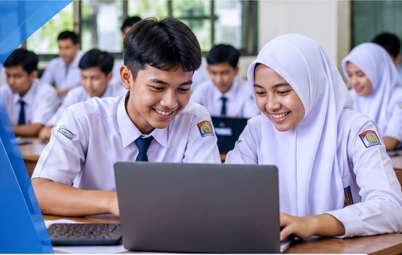
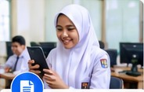
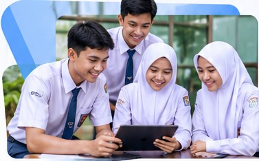
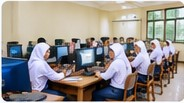
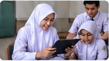
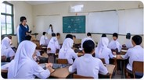

CBT Online (Ujian Berbasis Komputer)
Solusi pelaksanaan ujian dan asesmen secara online maupun berbasis komputer agar proses evaluasi lebih praktis dan terorganisir.
Tanyakan layanan →cbt100.my.id membantu sekolah, madrasah, dan lembaga pendidikan beradaptasi dengan teknologi melalui layanan CBT online dan solusi digitalisasi sekolah yang praktis.

Solusi digital yang dapat disesuaikan dengan kebutuhan pembelajaran, evaluasi, dan pengelolaan sekolah.
Solusi pelaksanaan ujian dan asesmen secara online maupun berbasis komputer agar proses evaluasi lebih praktis dan terorganisir.
Tanyakan layanan →Dukungan pemanfaatan media dan teknologi digital untuk menunjang kegiatan belajar mengajar.
Tanyakan layanan →
Membantu sekolah mengembangkan alur kerja administrasi yang lebih tertata dengan dukungan teknologi.
Tanyakan layanan →
Pembuatan media informasi digital untuk memperkenalkan profil, program, dan aktivitas sekolah kepada masyarakat.
Tanyakan layanan →
Pendampingan penggunaan layanan digital agar sekolah lebih siap menerapkan teknologi dalam aktivitasnya.
Tanyakan layanan →
Konsultasikan kebutuhan digital sekolah Anda untuk mencari solusi yang sesuai dengan tujuan dan kondisi sekolah.
Konsultasi kebutuhan →CBT100.my.id merupakan penyedia layanan digital yang berfokus pada kebutuhan sekolah dan lembaga pendidikan. Kami membantu menghadirkan pemanfaatan teknologi untuk proses ujian, pembelajaran, informasi, dan administrasi sekolah.
Proses awal dibuat mudah agar kebutuhan sekolah dapat dipahami sebelum menentukan solusi.
Sampaikan kebutuhan sekolah, seperti ujian CBT, pembelajaran digital, atau administrasi sekolah.
Kami berdiskusi untuk memahami kebutuhan dan pilihan layanan yang paling sesuai.
Setelah kesepakatan, proses penerapan dan pendampingan dapat direncanakan bersama.
Ilustrasi kegiatan belajar, penggunaan perangkat digital, dan lingkungan sekolah.

Diskusikan kebutuhan CBT online, e-learning, website sekolah, atau solusi digital lainnya bersama kami.